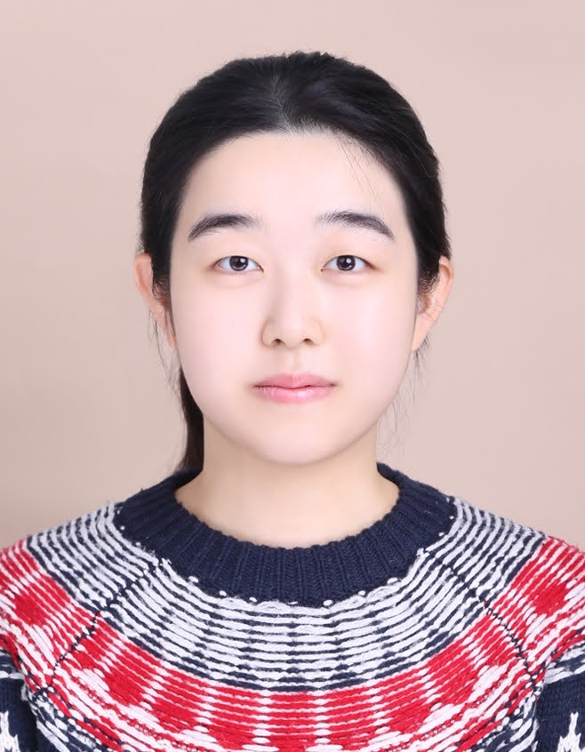
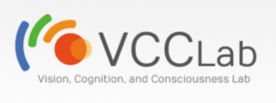

|
Jingai Huang I'm an undergraduate student at Yonsei University majoring in Artificial Intelligence and Cognitive Science. Previously, I was a research assistant at Vision, Cognition, and Consciousness lab, under the guidance of Prof. Sang Chul Chong, exploring my interest in human visual perception (peripheral vision and ensemble perception). I've also interned at a startup, where I contributed to fine-tune the Segment Anything Model for ship detection in SAR Drone Imagery. |
 |
{kind=link}
Research interestsMy research interests lie at the intersection of computer vision and brain-inspired artificial intelligence, focusing on saliency prediction to enhance machine perception and understanding of visual scenery information. |
Education |
|
Yonsei University, Seoul Korea Mar 2022 - Present • B.A. in Artificial Intelligence & B.S. in Cognitive Science |
Experience |
|  |
Vision, Cognition, and Consciousness Lab, Yonsei University Research Assistant (Advisor: Prof. Sang Chul Chong) | [July 2024 - August 2024] • Engaged in weekly one-on-one meetings with Prof. Chong to explore human visual perception focusing on peripheral vision and ensemble perception • Participated in group discussions on neuroscience papers |
|
Stellarvision Startup Intern | [September 2023 - June 2024] • Fine-tuned the Segment Anything Model for ship detection in SAR Drone Imagery • Created and translated market research reports for satellite and AI related companies • Participated in weekly tech-related meetings (AWS, Satellite Image Lessons, etc.) |
Projects |

|
Bopomofo Image Converter • Developed a Flutter desktop app that converts images of Traditional Chinese text into Zhuyin (注音) to support learners and heritage speakers • Integrated Google Cloud Vision OCR for handwritten and printed text recognition; used MOE linguistic resources for accurate phonetic conversion • Explored public dataset licensing and UI design; future plans include mobile version, image cropping, and LLM-based pronunciation disambiguation You can check out the project on GitHub. |

|
Scheduler Agent [Date Range] • Build a chatbot style scheduler using OpenAI API and a daily breifing tool using Gemini API • Learned how to deploy an app, manage API keys securely with .env, and set up a virtual environment • Gained hands-on experience with basic Streamlit commands for building interactive UIs You can check out the project on GitHub. |
Academic Papers & Reports |

|
Player's Prefrontal Cortex Activation Through fNIRS: Near-Misses and Stop Buttons in Slot Machine 🧠 Course : Data Analysis in Brain Cognitive Science, Fall 2023 Collaborated with a four member team to Investigated prefrontal cortex activation patterns during slot machine play using functional near-infrared spectroscopy (fNIRS). Examine how the orbitofrontal cortex (OFC) and dorsolateral prefrontal cortex (dlPFC) respond to win, near-miss, and loss scenarios in a within-subject design. Findings revealed heightened OFC activity during near-misses and increased dlPFC activation when participants had control (via a stop button), suggesting that near-misses engage reward systems and perceived control enhances cognitive processing. You can read the paper here. |
Ongoing ProjectsTo be continued... |
|
Voice Diary App 🎙️ In Progress - Started June 15, 2025 • Developing a voice memo app using Figma for UI/UX design and prototyping • Creating intuitive recording and transcription features for short voice memos • Implement Sentiment Analysis features in the app Status: UI design phase - Next step: Document detailed workflow and functions |
|
Implement Face2Vid Code Planning Phase • Planning to implement the FaceVid2Vid code from the paper Status: Reading Paper |
What I Like to Do in my Free Time |
|
Translate TED Videos You can check out my translations on my TED Translator Profile. |
|
Practice Guitar I am currently practicing Wind Songs by Kotaro Oshiro. |
|
Cafe Hopping, 맛집 탐방 I enjoy exploring cafes and restaurants in Seoul, especially those with unique atmospheres or delicious food. |
|
Website template from Jon Barron. |